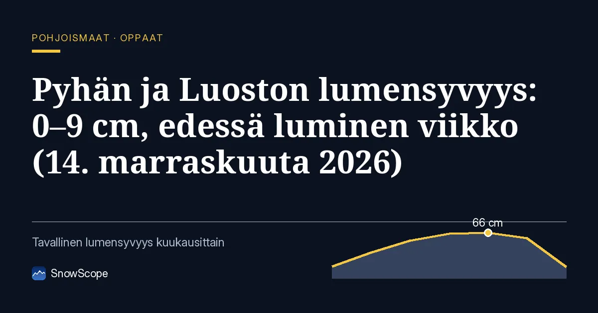

Pyhän ja Luoston lumensyvyys: 0–9 cm, edessä luminen viikko (14. marraskuuta 2026)
Marraskuun alussa Pyhä-Luostoon tullut lumi on ollut niukkaa ja epätasaisesti jakautunutta. Lähellä olevat säähavaintoasemat mittasivat 13. marraskuuta 0–9 cm, mikä jää selvästi alle 15 cm:n, joka on tyypillinen marraskuun puoliväliin mennessä. Tuleva viikko tuo merkittävän muutoksen: odotettavissa on runsasta lumisadetta, joka rakentaa kunnollisen pohjan viikonlopuksi mennessä.
Katso kohteen Pyhätunturi - Luosto lumiennuste reaaliajassa SnowScope-sovelluksessaLumensyvyys, puuterihälytykset ja 3D-kartta, ilmaiseksi.

Missä lumi nyt on
Kuva alueen yli on sirpaleinen. Kemijärven lentoasemalla, 43 km päässä 208 m korkeudessa, lumensyvyys oli 9 cm 13. marraskuuta. Savukoski kirkonkylässä, 55 km etelässä 177 m korkeudessa, oli 6 cm. Lähempänä tuntureiden juurta Pelkosenniemessä 156 m korkeudessa (22 km päässä) oli vain 1 cm, ja Sodankylän Tähttelässä 180 m korkeudessa ei ollut lunta lainkaan.
Tuntureiden huipuilla on todennäköisesti hieman enemmän lunta kuin matalaissa kylissä, koska ne ovat korkeammalla ja kylmemmällä. Silti peite pysyy ohuena ja epäjatkuvana. Lähes kaikki tämä lumi tuli viikkoja sitten; tuoretta lumisadetta viimeisen viikon aikana oli mitätön määrä, alle 1 cm.

Mitä tapahtuu ensi viikolla
SnowScope ennustaa noin 23 cm uutta lunta seitsemän päivän aikana 13. marraskuusta alkaen, joista noin 7 cm tulee ensimmäisten 48 tunnin aikana. Lumisade on tasaista ja kylmää, eikä sadetta ole juuri lainkaan millään korkeudella. Lumi saavuttaa maan pinnan koko alueella.
Muut säähallinteet, joiden kanssa SnowScope vertaa tuloksia, viittaavat 31–54 cm:iin tunturin korkeimmilla pisteillä samalla ajanjaksolla. Leviäminen heijastaa epävarmuutta, mutta kaikki signaalit osoittavat merkittävään lumisateeseen eikä kevyeen pölyyntiin.
Miten tämä vertautuu aiempiin talviin
Aiemmat talvet osoittavat, että 15 cm 14. marraskuuta on tyypillinen syvyys tällä korkeudella. 21. marraskuuhun mennessä mediaani nousee 21 cm:iin; 30. marraskuuhun mennessä 27 cm:iin; ja 15. joulukuuhun mennessä 37 cm:iin. Aineisto kattaa 46 talvea vuodesta 1980–81 vuoteen 2025–26.
Yhdessä talvesta kymmenestä maassa on vain 3 cm lunta 14. marraskuuhun mennessä, joten hidas alkukausi ei ole harvinainen. Syvin kuukausi on yleensä maaliskuu, jolloin syvyydet saavuttavat noin 66 cm:n mediaanin. Koko talven ajan lumi peittää maan noin 204 päivää.
Mitä odottaa tunturilla
21. marraskuun aamuna, jos ennuste toteutuu, maisema näyttää tunnistettavan lumiselta. Pohja on silti niin ohut, että kivet ja tupsut saattavat näkyä jyrkissä tai tuulisissa paikoissa, erityisesti etelään päin olevilla rinteillä. Tämä on normaalia marraskuun puoliväliin mennessä Suomen Lapissa.
Lumi, joka tulee ensi viikolla, on suhteellisen tuoretta ja siksi kevyempää kuin vakiintunut talvilumi. Se tiivistyy nopeasti liikenteen alla, erityisesti alemmilla rinteillä, joissa lämpötilat ovat lähempänä nollapistettä.
Hiihtokeskusten avajaiset
Pyhä julkaisee ensimmäisen avautumisjaksonsa 27. marraskuuta 2026. Luosto tähtää 28. marraskuuhun. Molemmat hiihtokeskukset täydentävät varhaisen kauden lumea tekolumella, joten varsinaiset avajaiset riippuvat sekä säästä että veden ja energian saatavuudesta.
Kansallispuiston polut tuntureiden ympärillä ovat jyrkät ja kiviset paikoitellen. Kunnes lumi saavuttaa 30 cm tai syvemmäksi, hyvät kengät ja säärystykit ovat käytännöllisempiä kuin sukset pois merkityistä poluista tapahtuvan liikkumisen kannalta.
Mitä seurata
Seuraa hiihtokeskusten omia verkkosivuja ja sosiaalisen median kanavia tarkkoja avajaisilmoituksia varten. Lumi Pyhässä ja Luostossa voi jäätyä kovaksi kylmän yön jälkeen, mikä luo hyvät pohjaedellytykset jopa vaatimattomalla kokonaislyheydellä. Varhaisen kauden hiihtäminen täällä usein palkitsee kärsivällisyyden ruuhkan sijaan.
Lumiennuste sisältää normaalia epävarmuutta; runsaat lumisadeennusteet voivat siirtyä muutamalla päivällä tai muuttaa kokonaisarvioaan. Jos viikko tuo ennusteyhtyällä 23–54 cm lunta tuntureiden alueella, keskitalven olosuhteet saapuvat useiden viikkojen edellä joulukuun keskiarvoa.
Vinkkejä laskijoille
- Kunnes pohja saavuttaa vähintään 30 cm, vältä jyrkkiä kivikenttöjä ja kallioleikkauksia. Kallioisku on todennäköisempää ohuella lumella. Pysy merkityillä rinteillä.
- Sulana oleva suo- ja järvipohja voi piilottaa vesitaskuja ohuen lumikrustauksen alla. Pysyttele karkeoiduilla poluilla, kunnes lumipeite vakiintuu ja paksuuntuu.
- Ota mukaan säärystykit, vesitiiviit käsineet ja lasit. Varhaisen kauden lumi on usein tuulenpolannut ja voi olla kova iholle. Valkoisen maan heijastama auringon valo on voimakas jopa marraskuussa.
- Tarkista lumivyöryennuste ennen mitään pois merkityistä poluista tapahtuvaa liikkumista. Pyhä-Luoston olosuhteista katso virallinen Euroopan lumivyöryvaroituspalvelun (EAWS) lehti osoitteesta avalanches.org.
- Seuraa hiihtokeskusten avajaisilmoituksia tarkasti, sillä alkamispäivät saattavat siirtyä muutamalla päivällä lumipeitteiden vakiintumisesta ja kylmien öiden lämpötiloista riippuen.
Näistä luvuista
Hiihtokeskusten lumensyvyydet ovat syvin lumi keskuksen ylärinteillä näytettynä päivänä; ne ovat arvioita alueelle, eivät mittaus yhdessä pisteessä. Ennusteet voivat muuttua. Lue aina virallinen lumivyöryennuste ennen rinteiden ulkopuolelle lähtöä.
Viralliset lumivyöryennusteet: EAWS – European Avalanche Warning Services
Viittaa tähän raporttiin
Tutkimukseen, opetukseen tai mediaan: luvut ja kaaviot ovat vapaasti käytettävissä CC BY 4.0 -lisenssillä tällä lähdeviitteellä.
SnowScope (2026), Pyhän ja Luoston lumensyvyys: 0–9 cm, edessä luminen viikko (14. marraskuuta 2026), https://snowscope.app/blog/fi/2026/11/pyha-luosto-snow-depth-14-november-2026.html, luettu 2026-11-14
SnowScope (Atlas Labs). (2026, November 14). Pyhän ja Luoston lumensyvyys: 0–9 cm, edessä luminen viikko (14. marraskuuta 2026). SnowScope snow reports. https://snowscope.app/blog/fi/2026/11/pyha-luosto-snow-depth-14-november-2026.html
BibTeX
@misc{snowscope2026pyhaluostosnowdepth14nov,
author = {{SnowScope (Atlas Labs)}},
title = {Pyhän ja Luoston lumensyvyys: 0–9 cm, edessä luminen viikko (14. marraskuuta 2026)},
year = {2026},
month = nov,
howpublished = {\url{https://snowscope.app/blog/fi/2026/11/pyha-luosto-snow-depth-14-november-2026.html}},
note = {Published 2026-11-14 15:29 UTC; accessed 2026-11-14}
}· CC BY 4.0 · Menetelmät, data ja työkalut →
Pyhätunturi - Luosto: lumi ja lämpötila korkeuden mukaan, tämä talvi ja viime talvi (työkalut) →
Seuraa: Pyhätunturi - Luosto
Ilmainen: viesti, kun uutta lunta on tulossa, ja ennuste joka aamu.